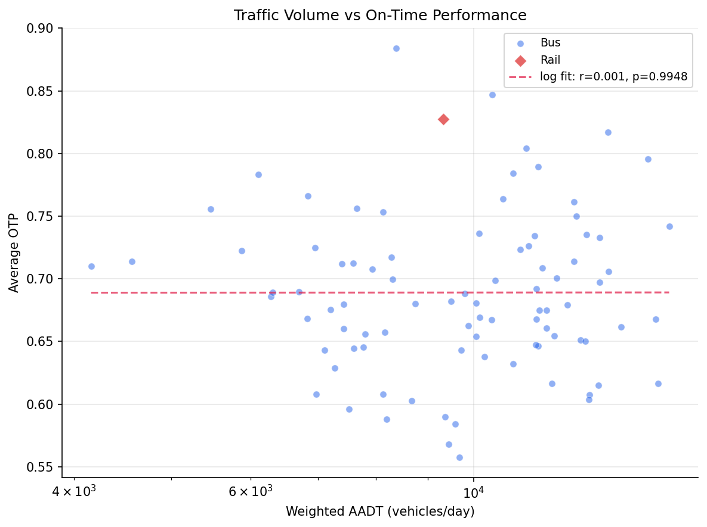
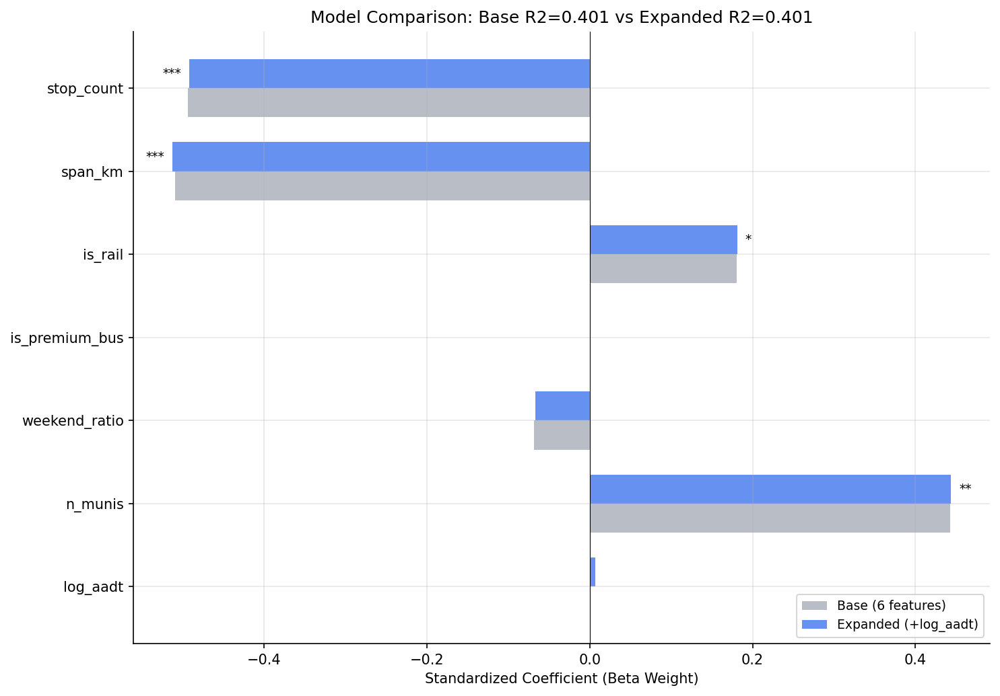
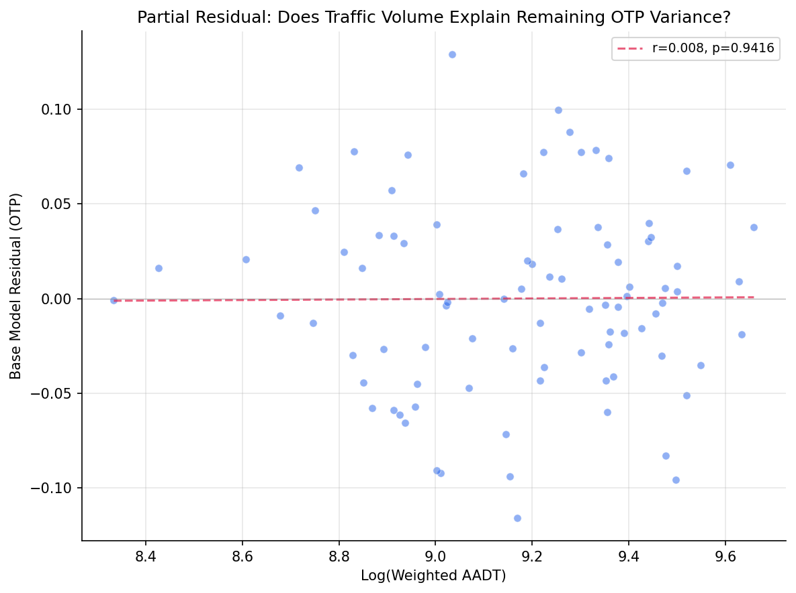

Analysis
27 - Traffic Congestion and OTP
Ridership and External Factors
Coverage: 2019-01 to 2025-11 (from otp_monthly).
Built 2026-03-03 02:19 UTC · Commit 8419aa5
Page Navigation
Analysis Navigation
Data Provenance
flowchart LR 27_traffic_congestion["27 - Traffic Congestion and OTP"] t_otp_monthly["otp_monthly"] --> 27_traffic_congestion 01_data_ingestion["Data Ingestion"] --> t_otp_monthly t_route_stops["route_stops"] --> 27_traffic_congestion 01_data_ingestion["Data Ingestion"] --> t_route_stops t_route_traffic["route_traffic"] --> 27_traffic_congestion 04_traffic_overlay["Traffic Overlay ETL"] --> t_route_traffic t_routes["routes"] --> 27_traffic_congestion 01_data_ingestion["Data Ingestion"] --> t_routes t_stops["stops"] --> 27_traffic_congestion 01_data_ingestion["Data Ingestion"] --> t_stops d1_27_traffic_congestion["numpy (lib)"] --> 27_traffic_congestion d2_27_traffic_congestion["polars (lib)"] --> 27_traffic_congestion d3_27_traffic_congestion["scipy (lib)"] --> 27_traffic_congestion classDef page fill:#dbeafe,stroke:#1d4ed8,color:#1e3a8a,stroke-width:2px; classDef table fill:#ecfeff,stroke:#0e7490,color:#164e63; classDef dep fill:#fff7ed,stroke:#c2410c,color:#7c2d12,stroke-dasharray: 4 2; classDef file fill:#eef2ff,stroke:#6366f1,color:#3730a3; classDef api fill:#f0fdf4,stroke:#16a34a,color:#14532d; classDef pipeline fill:#f5f3ff,stroke:#7c3aed,color:#4c1d95; class 27_traffic_congestion page; class t_otp_monthly,t_route_stops,t_route_traffic,t_routes,t_stops table; class d1_27_traffic_congestion,d2_27_traffic_congestion,d3_27_traffic_congestion dep; class 01_data_ingestion,04_traffic_overlay pipeline;
Findings
Findings: Traffic Congestion and OTP
Summary
Total traffic volume (AADT) does not explain OTP variance after controlling for structural features (F=0.011, p=0.92). However, truck percentage is a significant predictor (p=0.006), jointly boosting R2 from 0.40 to 0.45. Routes with higher truck traffic perform better on-time, likely because truck-heavy corridors tend to be wider arterials with fewer stops and more predictable traffic flow.
Key Numbers
- 89 routes analyzed (88 bus, 1 rail) after filtering match_rate >= 0.3
- Base model (6 structural features): R2 = 0.40, Adj R2 = 0.36
- Adding log(AADT): R2 = 0.40 (+0.0001), p = 0.92 -- not significant
- Adding log(AADT) + truck_pct: R2 = 0.45 (+0.05), joint F = 3.97, p = 0.023
- Truck percentage beta weight: +0.26 (p = 0.006), third-strongest predictor
- VIF for log_aadt = 1.17 -- no multicollinearity concern
- AADT range across matched routes: 4,181 -- 15,748 vehicles/day
- Top AADT routes: G3 (15,748), 28X (15,328), P12 (15,162)
Observations
- Traffic volume is orthogonal to OTP once structural features are controlled. The bivariate correlation is weak (r = +0.01) and the partial residual plot shows no trend. Routes on high-traffic roads perform similarly to those on quieter ones.
- Truck percentage captures road type, not congestion. The positive coefficient (+0.021 OTP per 1% truck share) suggests that truck-heavy routes operate on highways/arterials with infrastructure advantages (dedicated lanes, longer signal phases, wider roads).
- The three excluded routes (BLUE, P1, SLVR) are rail/busway with match_rate < 0.3, confirming that the PennDOT road network does not cover dedicated transit rights-of-way.
- Bus-only subgroup shows the same null result: log_aadt F = 0.011, p = 0.92.
- The spatial match rate is high (median 80%), indicating good coverage of the PennDOT road network for bus routes.
Discussion
The headline result is a null: traffic volume, the leading candidate for explaining the remaining 50% of OTP variance after structural features, contributes essentially nothing (R2 change of 0.01%). This is not a measurement failure -- the VIF of 1.17 confirms that AADT is nearly orthogonal to stop count and span, so it had every opportunity to capture independent variance. It simply doesn't.
Why not? The most likely explanation is that AADT measures the wrong thing. Annual average daily traffic smooths over the peak-hour congestion that actually delays buses. A road carrying 15,000 vehicles/day spread evenly across 24 hours is very different from one carrying the same total with 40% concentrated in two rush-hour peaks. PRT buses operate disproportionately during those peaks, so the congestion they experience is poorly proxied by a 24-hour average. Directional, time-of-day traffic counts -- or better yet, speed/travel-time data from probe vehicles -- would be a more direct test.
The truck percentage finding is the genuine contribution of this analysis. At +0.26 beta weight (third-strongest after stop count and span), truck share adds 5 percentage points of explained variance. But this almost certainly proxies for road classification rather than a direct truck-bus interaction. Roads with high truck percentages tend to be state highways and major arterials -- wider, with longer signal cycles, fewer pedestrian crossings, and more predictable traffic flow. The truck_pct variable is effectively encoding "this route runs on a highway" in a way that is_premium_bus failed to capture (since many non-premium routes also use arterial segments for part of their alignment).
This connects to the broader model-building narrative across Analyses 18, 26, and 27. The base model (stop count + span + mode) explains ~40% of variance. Adding n_munis as a suppressor pushes it to ~47%. Adding truck_pct pushes it to ~45% on the traffic-matched subsample. Ridership (Analysis 26) added nothing. The cumulative picture is that roughly half of OTP variance is explained by route geometry and road type, and the other half likely requires operational data (schedule padding, driver availability, vehicle condition, real-time traffic conditions) that is not in this dataset.
For policy, the null AADT result is actually useful: it suggests that rerouting buses to lower-traffic roads would not improve OTP, since traffic volume per se is not the problem. The truck_pct finding, if it indeed proxies for road type, suggests that routes spending more of their alignment on arterials (vs. neighborhood streets) perform better -- consistent with the stop count finding, since arterial segments typically have fewer stops per mile.
Caveats
- AADT is an annual average; it does not capture peak-hour congestion, which is when buses run most frequently and are most affected. Directional or time-of-day traffic data would be a stronger test.
- PennDOT covers state routes; local streets (where many bus routes run) may be underrepresented.
- The truck_pct finding may proxy for road classification rather than a direct causal mechanism.
- The spatial matching uses a 30m buffer, which may associate routes with adjacent parallel roads in dense urban areas.
Output

bivariate scatter of AADT vs OTP.

beta weight comparison between base and expanded models.

partial residual plot for log_aadt.
No interactive outputs declared.
regression results for all models.
Preview CSV
per-route traffic data with OTP.
Preview CSV
VIF values for expanded model.
Preview CSV
Methods
Methods: Traffic Congestion and OTP
Question
Does traffic volume (AADT) explain OTP variance beyond stop count, geographic span, and other structural features from the Analysis 18 model?
Approach
- Replicate the Analysis 18 six-feature OLS model on routes with matched PennDOT traffic data.
- Filter to routes with
match_rate >= 0.3(sufficient spatial overlap with PennDOT road network). - Add log-transformed weighted AADT as a seventh predictor. Log transform is used because the effect of traffic on delays is expected to show diminishing returns (doubling from 5,000 to 10,000 AADT matters more than 25,000 to 30,000).
- Compare adjusted R-squared between six-feature and seven-feature models using a nested F-test.
- Fit a second expanded model adding
avg_truck_pctas an eighth predictor. - Check VIF for multicollinearity (AADT may correlate with span or stop count).
- Repeat with bus-only subset.
- Generate bivariate scatter (AADT vs OTP), coefficient comparison chart, and partial residual plot.
Data
| Name | Description | Source |
|---|---|---|
otp_monthly |
route_id, month, otp (averaged to route-level, 12+ months required) | prt.db table |
route_traffic |
route_id, weighted_aadt, avg_truck_pct, match_rate (built by traffic_overlay.py) |
prt.db table |
route_stops |
stop counts, trip frequencies | prt.db table |
stops |
lat, lon for geographic span computation | prt.db table |
routes |
route_id, mode for subtype classification | prt.db table |
Output
output/model_comparison.csv-- regression results for all modelsoutput/vif_table.csv-- VIF values for expanded modeloutput/route_traffic_summary.csv-- per-route traffic data with OTPoutput/aadt_vs_otp_scatter.png-- bivariate scatter of AADT vs OTPoutput/coefficient_comparison.png-- beta weight comparison between base and expanded modelsoutput/partial_residual.png-- partial residual plot for log_aadt
Sources
| Name | Type | Why It Matters | Owner | Freshness | Caveat |
|---|---|---|---|---|---|
| otp_monthly | table | Primary analytical table used in this page's computations. | Produced by Data Ingestion. | Updated when the producing pipeline step is rerun. | Coverage depends on upstream source availability and ETL assumptions. |
| route_stops | table | Primary analytical table used in this page's computations. | Produced by Data Ingestion. | Updated when the producing pipeline step is rerun. | Coverage depends on upstream source availability and ETL assumptions. |
| route_traffic | table | Primary analytical table used in this page's computations. | Produced by Traffic Overlay ETL. | Updated when the producing pipeline step is rerun. | Coverage depends on upstream source availability and ETL assumptions. |
| routes | table | Primary analytical table used in this page's computations. | Produced by Data Ingestion. | Updated when the producing pipeline step is rerun. | Coverage depends on upstream source availability and ETL assumptions. |
| stops | table | Primary analytical table used in this page's computations. | Produced by Data Ingestion. | Updated when the producing pipeline step is rerun. | Coverage depends on upstream source availability and ETL assumptions. |
| numpy | dependency | Runtime dependency required for this page's pipeline or analysis code. | Open-source Python ecosystem maintainers. | Version pinned by project environment until dependency updates are applied. | Library updates may change behavior or defaults. |
| polars | dependency | Runtime dependency required for this page's pipeline or analysis code. | Open-source Python ecosystem maintainers. | Version pinned by project environment until dependency updates are applied. | Library updates may change behavior or defaults. |
| scipy | dependency | Runtime dependency required for this page's pipeline or analysis code. | Open-source Python ecosystem maintainers. | Version pinned by project environment until dependency updates are applied. | Library updates may change behavior or defaults. |